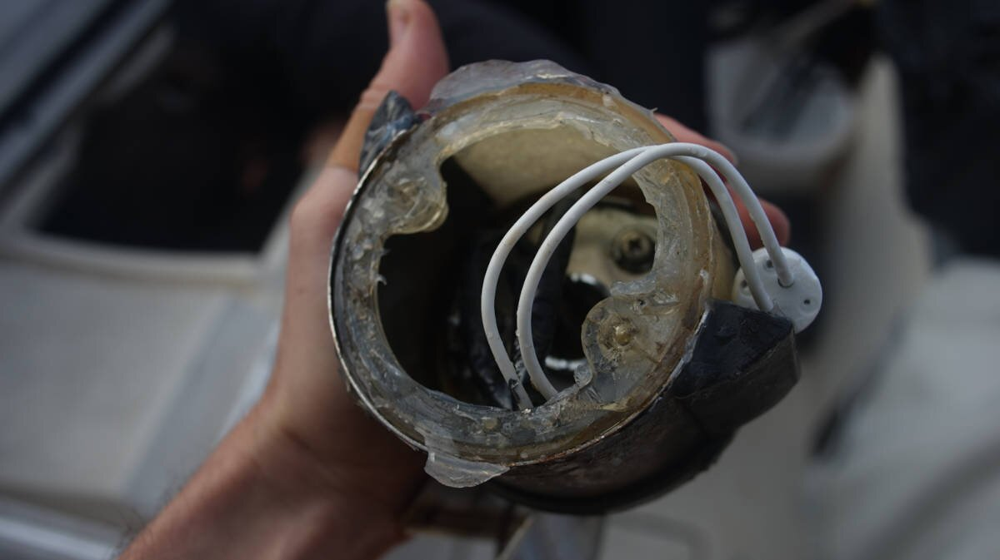

dc electrical refit
2022.11.29
Victoria, BC. Canada.
Disclaimer: We reserve the right to be wrong (we're still learning).
Click below dates for more recent updates:
DC wiring
- Required gear
- Battery connections
- Battery protection
- DC breaker panel
- Wiring
- Marine wire termination
- Battery monitor
- Cabin lights
- The mast
- Running lights
- Bilge pump
Required gear
This isn't a complete list, what is needed depends on the systems installed aboard. This list is here to give an idea of what may be required to re-wire a boat.
- Double crimp tool
- Wire stripper
- Heat gun
- Hydraulic crimping tool (for thick wires that require lugs)
- Pink, yellow and blue adhesive-lined heatshrink ring terminals and butt connectors
- Some tinned-copper lugs (sizes depends on wire gauge)
- Heatshrink tubing, a variety of gauges (to seal tinned-copper lugs)
- Spindles of sleeved 2-conductor wiring (sizes depend on amperage, and distance)
- Lots and lots of zip-ties, and plastic clips to secure wiring
- Gang terminals
- Fuse boxes (and matching fuses)
- Etc...

Pino looks well-ordered when standing inside the cabin, but a peek behind the wall and ceiling panels reveals a nightmarish scene. The boat has fewer systems than it used to, but a lot of the old wiring is still there, tangled and trapped with other important wires. Because of this tangled mess it is difficult to see what is what. In the fall of 2022, we decided that it was time to tackle this dreaded, but necessary project.
Shore power. If living aboard, having a working AC system, and being connected to shore power is important for an electrical re-fit, it means being able to remove all systems while still being able to cook, and to keep the boat lit. With shore power, we used an induction cooktop to cook (to replace the DC Lpg system), and two bright 120V clamp lights to keep work areas lit.
Removing all connections from the DC breaker panel. At first, we were careful to identify each wire, adding labels as we removed them from the breaker panel, thinking that we could use them as leading wires, but that turned out to be a silly idea. Most of the old wiring on older boats are bound together, and routed through an inaccessible maze of narrow pipes. Sometimes, the wires are packed in so tight that nothing moves in either direction.

We were able to remove a lot of the old wiring, but not all of it. Yamaha 33's, like many other production boats, were not designed to be re-wired. Sometimes we wonder if the builders thought these boats would live to be more than 40 years old, perhaps not. Wiring was likely put in before the cabin top and hull were sandwiched together.
Many of the old paths created to run wires are now unusable, requiring that we make new paths. Now, the wiring is more visible, but also, more accessible.
Battery connections
Currently on Pino we have 2 sets of 6-volt batteries connected in series to make 12V, which are in turn wired in parallel (for more amp hour capacity), that act as both a house and starter bank. We don't have a dedicated starter. Our battery switcher is a simple on/off switch.
The downside of this is that all of the batteries are spent at the same time, if they fail, they fail together. We have to monitor things carefully, to replace them before they decide to die. We have limited room for batteries aboard, and this way of doing things hasn't caused us problems. Prior to 2022, we had a all/1/2/off switch(the switch died in May 2022, a friend donated an on/off switcher for us to use), that permitted us to switch to start the engine, or to pair the sets of batteries together, but it just adds more complexity... and back then we kept the batteries on all most times anyway.

Both sets of batteries used to be paralleled together with 2 AWG wiring, which we replaced with 2/0 AWG wiring. The AWG numbering system ranges from 0 to 44 sizes. This system also includes three increments below zero(00, 000, and 0000) which are referred to as aught rather than gauges. So, instead of calling the cable 00 gauge or 000 gauge, call them 2/0 aught and 3/0 aught(sometimes written as 2 0 and 3 0). A wire labeled 2/0 will be thicker than a wire labeled 2 AWG. A 2/0 copper wire will be able to carry up to 200 amps, while a 2 AWG copper wire will have up to 125 amps.
The wire terminations for large wire gauges must be done well. We used a pneumatic crimp tool(borrowed from a friend) to secure the lugs onto the wires. Always make sure to put the heat shrink tubing onto the wire before crimping the end. We used red heat shrink for both the pos/neg wires, because it is more costly to buy two different colored sets, and because the wires themselves are colored it would be very difficult to mix things up. When choosing lugs, make sure that the hole matches the diameter of the bolt it will be secured to.
Pino's house bank is wired onto both a positive, and negative bus. In the above schematic, the engine cables aren't connected. Evidently, this is a simplified drawing, not all loads and connections are represented (only very basic ones).
The negative side of the battery is wired onto a shunt(for the battery monitor), which is in turn linked to the negative bus with all of the loads. All loads lead back to the two breaker panels. From the breaker panel all wires lead to a nearby gang terminal (simplifies connections to the breaker panel), and then toward the various DC systems scattered aboard the boat.
The positive side of the battery leads back to the battery switcher, then onto the positive bus which connects to a gang terminal, then onto the DC breaker panel.
Battery protection

A fuse is an engineered weak point, a device that protects from overcurrent. It ought to be sized to be larger than the maximum load, and smaller than the wire gauge(to protect the wire). Its goal is to fail safely before other parts of the system can fail in an unsafe manner.
All battery banks ought to have a fuse placed within 18 cm (7 in), putting an MRBF terminal fuse block on the positive battery post provides high current protection without having to cut wires. The fuse will protect the battery cables from over heating and melting. We got the fuse holder as well as a 30A fuse(sized for our house systems).
There can be only one circuit connection to a terminal fuse (sitting over the fuse, after the battery), everything else, whether it be sense wires, or an automatic bilge pump, must be before the fuse.
The fuse has a clear housing, which makes it easy to check if its blown. If placed on the battery positiv, the only downside is that it does add some height to the top of the battery.
We have two terminal fuse blocks: one for the engine and another for the house circuits. Because we don't have a dedicated starter, we cannot place the smaller 30A fuse on the battery itself (or it'll blow out when starting the engine). We have to put it on the positive bus, to where the two DC panels meet. The fuse for the engine is onto another spot on the positive bus, where the pos engine cable is connected.
See this page[PDF] for installation instructions.
DC breaker panel

Overtime, we removed and added a lot of systems onboard. Before we buy a breaker panel, we have to figure out how many switches we need...
We finally decided on 13 switches. Our previous DC system had 22 switches split over 3 panels, we're keeping the more modern 8-switch panel, and replacing the two antique 7-switch fused panels.
Panel 1
- Manual bilge pump
- VHF
- USB outlets
- Stereo
- Main cabin lights ( + head fan w/ switch, + 2 lights with their own switches)
- Radar
Panel 2
- LPG
- Chartplotter
- Depth Sounder
- Anchor light/steaming light
- AIS
- Sailing instruments
- Running lights (front + back + compass light)

The new Blue Sea breaker panel is wider and shorter than our former panels, we had to make a new wood panel to support it.
We went to the hardware store and had a short length of birch cut to size, matching the dimensions of our former breaker panel doors. The hardware store has a bench saw, and makes cuts for a small fee (convenient for us). Birch is light-colored, so to try and match the rest of the wood we stained it with instant coffee. To match the wood, we had to make 3 coats.

We don't have a jigsaw, and our handsaw can't cut within another shape, so we had to cut the door by first making holes with a drill, then by chipping away at the edges with a wood chisel and a hammer, until we could fit a saw blade. We sanded the inside edges.

Because the wood isn't rot resistant like some hardwoods, we added 3 coats of varnish. The finished door looks amazing...! We fitted the old hinges and screws.

Below is a view inside one of the two DC breaker panels that we have, with everything connected.
Wiring
The size of the wiring on a boat depends on the length of the cable (if powering a light say, measure from the power source to the light and back), and on the current(amperage) that will flow through it. The longer the cable, or the more current runs through it, the thicker it ought to be.
When sizing cables (esp for high-power circuits) add some extra margin for safety, due to numerous factors (heat, extra load etc) some appliances may use more current than what they are rated for. See this article for help sizing cables.
When choosing wiring, we made sure that the wire had:
- Multiple strands, which makes it more flexible while minimizing work hardening and fractures.
- Good quality insulation, rated for high temperatures, and is oil and moisture resistant.
Tinned wire, yes or no? Tinned wire is more corrosion resistant, but if the wire terminations are hermetically sealed (using heat-shrink crimp terminals), un-tinned wire will be more than adequate.
marine wire termination

The above is a connection we found in Pino's ceiling while re-doing the wiring, this is how a previous owner spliced some of the cabin lights together. This splice was tinned, and bound by electrical tape. Making connections like this was more common in the 80's, but doesn't fly in 2022. On a boat there is a lot of movement, and vibrations, which overtime can loosen the connection.
The major difference between a thing that might go wrong and a thing that cannot possibly go wrong is that when a thing that cannot possibly go wrong goes wrong it usually turns out to be impossible to get at and repair.
— Douglas Adams
List of connection DONT's
- Never use electrical tape over connections
- Never solder wires together, they ought to be mechanically connected
- Never twist wires together (too much resistance)
- Never connect wires together with household "wire nuts"
- Never wrap a bare wire around a terminal screw to connect wires together
List of connection DO's
- Use terminals that are made from tin plated copper, not aluminum
- Use only plastic, not metal, clips to secure the wiring
- Use ring terminals over spade terminals, ring terminal can't pull off
- After crimping, always do a pull test(to make sure it won't come apart)
- Always cover crimped connections with heat-actived, adhesive-lined heat shrink tubing
- Use a heat gun for uniform heat-shrinking, an open flame will lead to uneven melting of the adhesive, distortions in the insulation and can lead to leaks, bubbles & voids
- Use a good quality crimper that can double crimp
Do your hands a favor, get/borrow good tools. Pino has a shitty wire stripper/crimper that destroys all it touches, including our fingers. A friend lent us his Ancor crimp tool.

Ring connectors are sized to wires, and are color-coded for each gauge size:
Pink - 22-18 AWG
Yellow - 12-10 AWG
Blue - 16-14 AWG
Using butt connectors to splice wires? We've been splicing wires together with butt connectors for a while now, sometimes it is the only option available. It is always better to use uncut wire, and if possible to make the splice using a gang terminal bus.
Splicing circuits should be avoided. If splicing is necessary, it should employ a proper terminal block, and not butt connectors. Every splice in a circuit creates additional resistance, and the potential for the connection to come apart.
— David H. Pascoe, Marine Surveyor

Note: In the above picture, we didn't add drip loops to the wiring, but we will. Drip loops just keep water away from the gang terminal, should there be any moisture.
Battery monitor
Pino had a meter displaying the voltage of the two sets of batteries, but never had a monitor that could tell us the state of charge of the batteries, or the ampere hours consumed.
Salesperson: "We sell this smart battery monitor that pairs with your phone via Bluetooth, and sends-"
Us: "Uh, do you have, like, the dumb version of this?"
Salesperson: "Yes, I think we might have some in the basement..."
Many of the battery monitors on the market are smart, they pair with your phone and can be monitored with an app—we did not want this. Victron produces a model that isn't as smart: the BMV 700.
On the BMV 700 unit, all electrical connections are to the quick connect PCB on the current shunt. The shunt connects to the monitor with a standard RJ12 telephone cable. The set comes with the aforementionned RJ12 cable (10m) and battery cable with fuse (2m). See the wiring diagram in Battery connections to see how the battery monitor is connected to the battery.
Cabin lights
Some nights at anchor, we had to watch which light was on and for how long because some would draw the battery down too much. We had ghosts in the wiring. A single light ought not to draw down the battery that much, fixing this problem was our top wiring priority. After inspection, we found that our main cabin lights had the jankiest wiring we'd ever seen.
The wires were spliced together, covered with thin and rolls of electrical tape. Many of these wires were corroded.

We replaced 4 of our dome lights with warm LED potted deck lights. The lights mount flush on the ceiling, the metal is high grade SS, each draws 0.6W, IP67 waterproof, and FT1 fireproof and insulated. Multiple lights can be wired in parallel, by way of waterproof connectors.
These lights don't have switches, so we had to wire some in.

The two galley lights are daisy chained and make use of the same switch. The light over the navigation table also has its own separate switch because we don't always want to have all of the lights on at the same time, the daisy chained galley lights are the one exception. All of the cabin lights are on the same circuit, and meet at a few different spots around the boat on gang terminals (to minimize wiring), which are then routed to another gang terminal near the DC breaker panel.

Not all of the domes were bad, we got rid of two but cannibalized one for its switch. The switch of those dome lights fail sometimes, and it is good to have spares.
The mast
Pino has the following systems wired up through the mast: Radar, the wind meter, the spreader lights, a steaming light, and an anchor light. All of these wires run through the ceiling and up through a hole in the mast.
We decided to remove the spreader lights, they draw too much and we don't use them. Removing the spreader lights meant climbing up to the first set of spreaders to drill out some rivets. Removing the cut wiring from the inside was easy enough.
We plan to run new wiring for the steaming light, and in time we'll change the halogen anchor light for an LED. Changing the anchor light is tricky, we don't have mast steps and the bosun's chair won't get us high enough to see the top of the mast.

The wires for the steaming light (now an LED) and the anchor light (still a halogen) will be led back to the near panel, both will share the same power (same breaker switch), although each will have their own on/off switch, because we don't want both to come on at once.
Running lights
While replacing the light inside the aft running light holder for an LED, we dropped the cover in the water and it sank. We grabbed some hard wood, made two screw holes, added silicone where the wood would meet the top of the holder, and overtop of the screws to prevent water ingress.
We removed the cover to replace the wiring, and found the light was full of water. The water found a way in, but had no way of draining out. It was finally time to retire this light, it had a good 40-year run.
We decided to replace it with a potted light. The light is completely enclosed, and is good for indoor/outdoor use.
Because we like to re-use what we already have whenever possible, as a holder for the light we used an old Scotty fishing rod holder. The fishing rod holder belonged to one of Pino's former owners (we don't eat fish). We kept it because we thought we could use it for something else, but is has been hanging on the stern rail for years. We found that the potted light fit the hole perfectly.

The light is very bright, and will be visible from the back, but we are not certain that this meets Transport Canada regulations. The light may not be as visible from the side. We'll test it at night at an anchorage and see if whether or not it is visible, if it isn't, we'll make some modifications.
The compass light is wired onto the same breaker circuit, we put in a switch to have the option of turning it on/off.
Bilge pump
Our bilge pump is an Orca Auto 82L automatic model. We bought it in Japan after our former setup failed(water puppy pump, plus a float switch). The float switch failed first, we replaced it, then the pump failed.
The unit is sold with a fuse housing that isn't waterproof (we didn't realized that at the time). Our fuse runs under the floor, as most bilge pump wiring tends to do, and when we opened it to check it we found that the fuse was completely corroded. It sucks that these pumps are sold with connections that will inevitably fail.
We cut the old fuse housing, and bought a very adorable waterproof housing to replace it.
The wires for the manual side were crimped together with a very non-marine butt connector. To remedy this, we added a heat-shrink ring terminal to both ends, and led them to a small 2x2 gang terminal(with a jumper between both). Another wire was then led back to the breaker panel.
Pino's wiring after! Ahhh... much better.
We also re-did all of the AC on Pino, see ac electrical refit.
Resources
- Tips on Electrical System Use and Maintenance, David H. Pascoe, Marine surveyor.
- Marine Wire Termination, Marine How-To.